A running plan, coached by any AI.
Gradial builds your plan from your fitness and goal time, sends every session to your Apple Watch, and reads your runs back. Then Claude, ChatGPT or any AI coaches you from your plan and recent runs, and you approve every change.
Free on iPhone, iPad and Mac with iOS 26 or macOS 26. No account.
Every session, straight to your Apple Watch.
Gradial writes each session of your plan into Apple’s own Workout app: the warm-up, every rep at its pace, the recoveries and the cool-down. On the day you start it on your watch like any other run. There’s no Gradial app to open on your wrist.
-
1
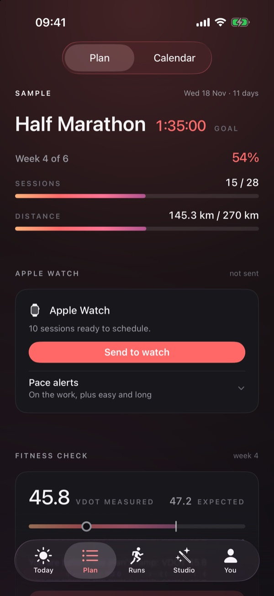
Send the plan to your watch
Gradial builds each session from your plan and paces every rep from your own fitness. One tap sends the coming weeks; when the plan changes, one tap updates them.
-
2
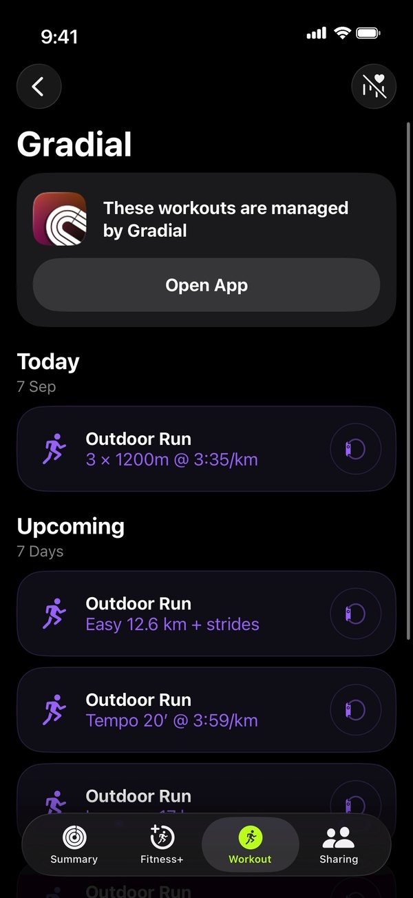
They land in Apple’s Workout app
Each one waits on its day in the Workout app, step by step, marked as managed by Gradial. This is a real screen, not a drawing.
-
33 × 1200mHard — 5K effort 2 of 321:47.183′31″/KM3′27″–3′43″ /KM0.64KM LEFT168BPM
Run it from your wrist
Start it like any outdoor run. The watch counts the reps and tells you when you drift out of the pace band.
AI coaching, with the AI you already use.
Studio gives Claude, ChatGPT or Gemini your plan, your fitness and your last four weeks of runs, so it can ease a week when a calf is tight, rebuild around a holiday, or adapt the plan to how training is going. The AI suggests the change, Gradial’s own engine sets the paces, and nothing moves until you approve it. Gradial makes no AI calls of its own.
On your iPhone with copy and paste
-
1
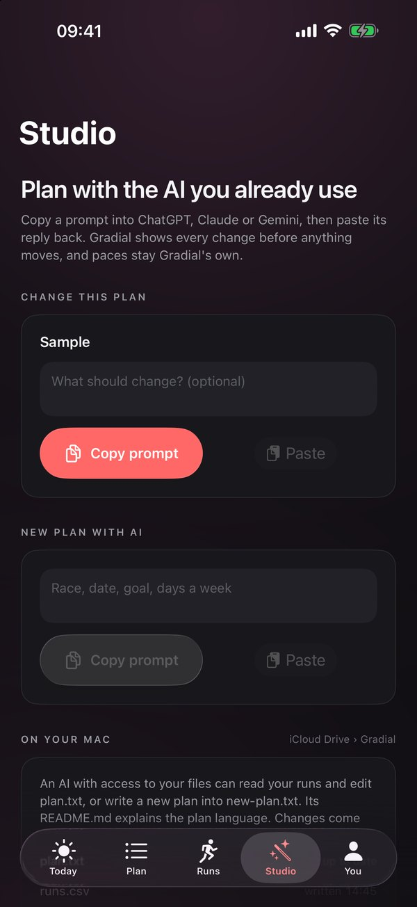
Copy the prompt
Say what you want in plain words, or leave it blank. Studio copies your plan, your recent runs and the rules of the plan language.
-
2
Ask in your AI app
Paste it into ChatGPT, Claude or Gemini on the same phone. It replies with the plan, rewritten in Gradial’s plan language.
-
3
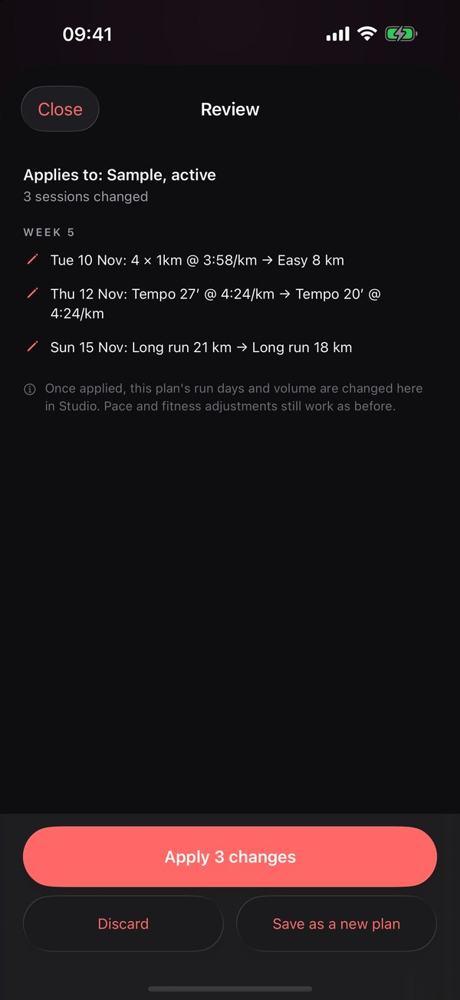
Paste the reply, then review
Gradial lists every session the reply changes. Apply takes it; Discard leaves your plan as it was.
On your Mac through iCloud Drive
-
1
Gradial keeps a folder
Your plan, your runs and a guide to the plan language, as plain files in your own iCloud Drive.
-
2
Your AI edits it
Point any assistant that can open a folder at it and ask. The README teaches it the plan language, so there’s nothing to set up.
-
3
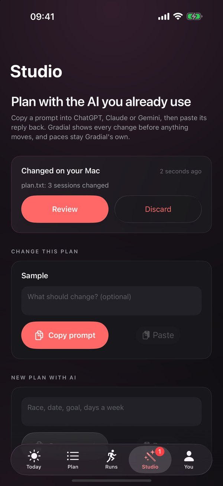
Review it on your iPhone
The change waits in Studio as “Changed on your Mac”. Nothing moves until you apply it.
- Weeks before today are never touched, whatever the reply says.
- The AI names the effort; Gradial sets the pace from your fitness.
- Five changes are free. Gradial Pro unlocks the rest.
One plan, on every screen you own.
Plan the block on your Mac, check the week on your iPad, open the session on your iPhone or unfold it on an iPhone Duo. Gradial Pro keeps them in step through your own iCloud.
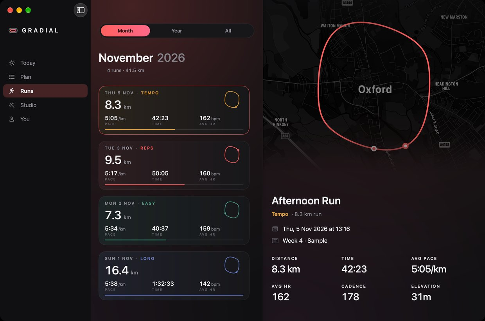
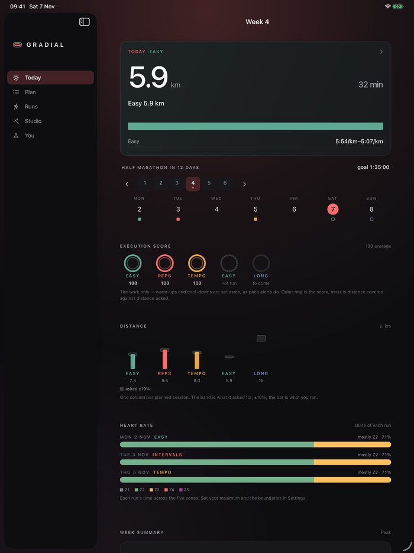
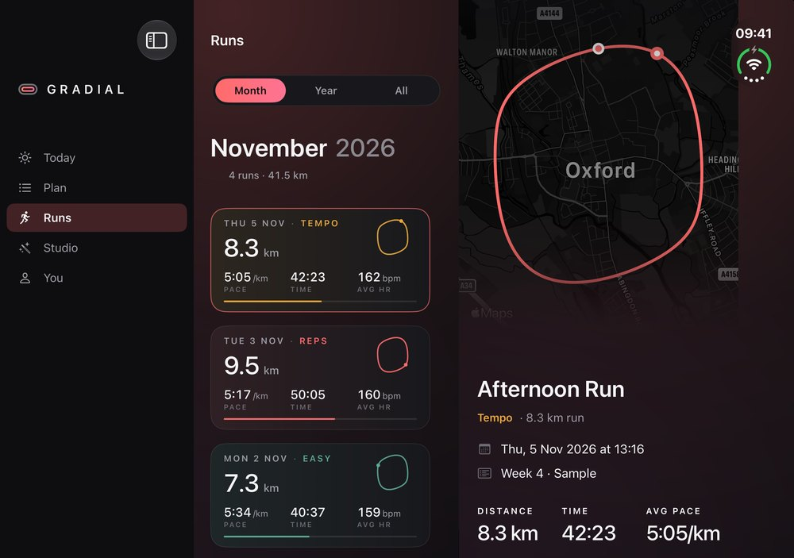
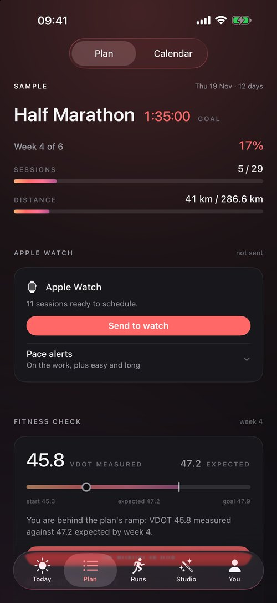
Change it anywhere
Edit a session, move a week or apply a Studio change on any of them, and the rest follow.
Runs come from your iPhone
Your iPhone reads each run from Apple Health and shares it, scored, with your iPad and Mac.
Your iCloud, not ours
Sync uses your private iCloud database. Gradial has no server, so nothing passes through us.
Sync is part of Gradial Pro: one purchase, shared with your family.
The plan, the watch, and every run read back.
Without an AI, Gradial is still the whole thing. Paces come from Jack Daniels’ VDOT method and tighten week by week towards goal pace. Each session lands on your wrist with its steps and targets, and each run comes back scored against what it asked for.
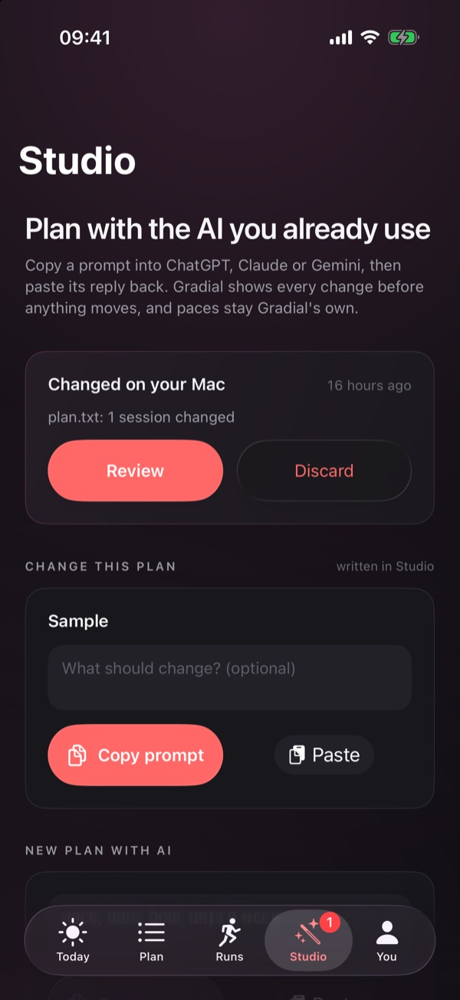
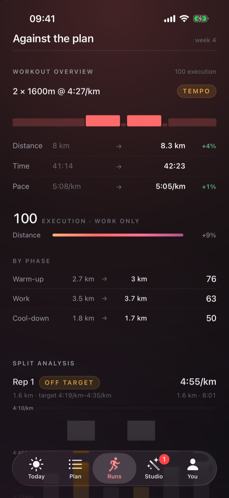
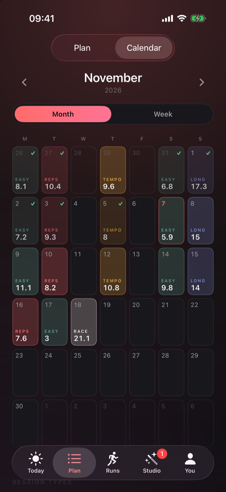
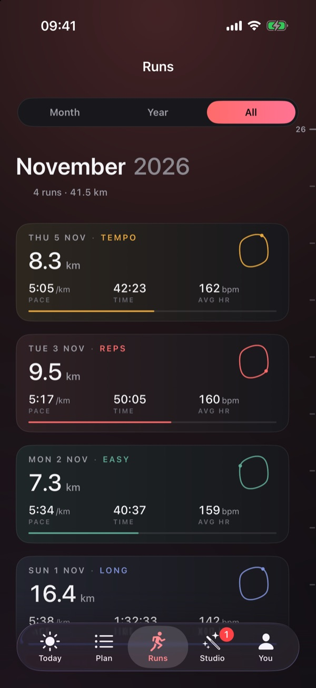
Free to use. Pro, bought once.
Building plans, the watch, scoring every run, the calendar and your history are free on every device, for good. Gradial Pro adds the two things that need more than one device or more than a few goes: Sync, and unlimited Studio.
Try Studio first. Your first five changes are free, so you’ll know whether it suits you before you pay anything.
Gradial Pro
- Unlimited Studio changes, on your phone or your Mac
- Plans and runs synced across iPhone, iPad and Mac
- Shared with your family through Family Sharing
- No subscription and nothing to renew
Bought in the app. Prices vary by region.
No account. No subscription. No server of ours.
Other training apps keep your running on their servers, so they need an account and a monthly fee. Gradial has no servers. Your runs are read from Apple Health on the iPhone that already holds them, the plan lives in the app, and Sync uses your own iCloud.
Studio keeps to the same rule. Your plan reaches an AI only when you paste it in or give that AI your Gradial folder, and that AI’s own terms apply to what you share with it.
Before you download it.
Is Gradial an AI running coach?
It makes one out of the AI you already use. Studio gives an LLM such as Claude, ChatGPT or Gemini your plan, your fitness and your last four weeks of runs, and asks it to adapt the plan to how training is going, or to whatever you tell it. Gradial checks the reply, sets the paces with its own engine, and shows every change before it applies. It makes no AI calls itself, so there is no AI subscription to pay for here.
Which AI does Studio work with?
Any that can read a long message and reply with text: Claude, ChatGPT, Gemini and others. On the phone you paste the prompt into its app. On the Mac, use an assistant that can open a folder, and point it at iCloud Drive › Gradial. The folder’s README explains the plan language, so the AI needs no setup.
What if the AI gets it wrong?
Nothing changes until you apply it. Gradial checks the reply line by line, and if a line can’t be read it says which one and why, with a button that copies the errors back for your AI to fix. Past weeks are kept as they were, whatever the reply says, and paces come from Gradial’s own engine, not from the AI.
What does it cost?
The app is free on every platform, with no subscription. Gradial Pro is one purchase, £7.99 or $7.99, shared with your family, and it unlocks Sync between your devices and Studio beyond the first five changes.
Do I need an account?
No. There’s no account and no sign-in screen. Open the app and build a plan.
Does it work without an Apple Watch?
Yes, minus the wrist. You get the plan, the sessions and the scoring, using whatever you already record runs with, as long as it writes them to Apple Health.
Where does my data go?
Nowhere of ours. Without Pro, nothing leaves your phone. With Sync, it goes to your own iCloud, where Apple holds it under your Apple Account and we can’t read it. The Studio folder lives in your own iCloud Drive too. See the privacy policy.
How are the paces worked out?
From VDOT, Jack Daniels’ method for turning a race result into training paces. Your anchor is a race time you entered or the fitness Apple Health has measured, and the paces move as that moves. A plan from Studio names zones, such as threshold or easy, and Gradial fills in the paces the same way.
What does it need?
iOS 26 or macOS 26, and an Apple Watch with watchOS 26 for the wrist half. Race predictions need the VO₂max Apple Health writes after a few outdoor runs with heart rate. Gradial is training software, not medical software, and is not available in the European Union at launch.
Build the plan. Then make it yours.
Free on iPhone, iPad and Mac. Bring your watch, and whichever AI you like.